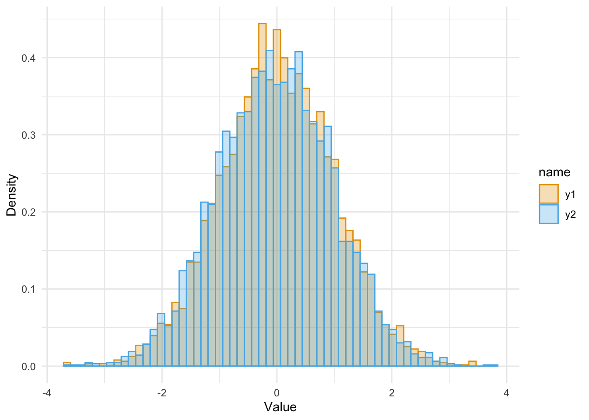
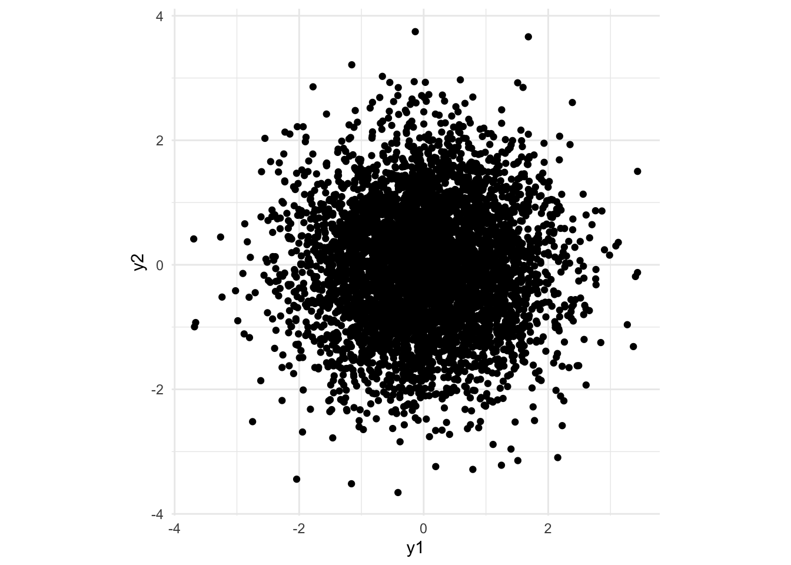
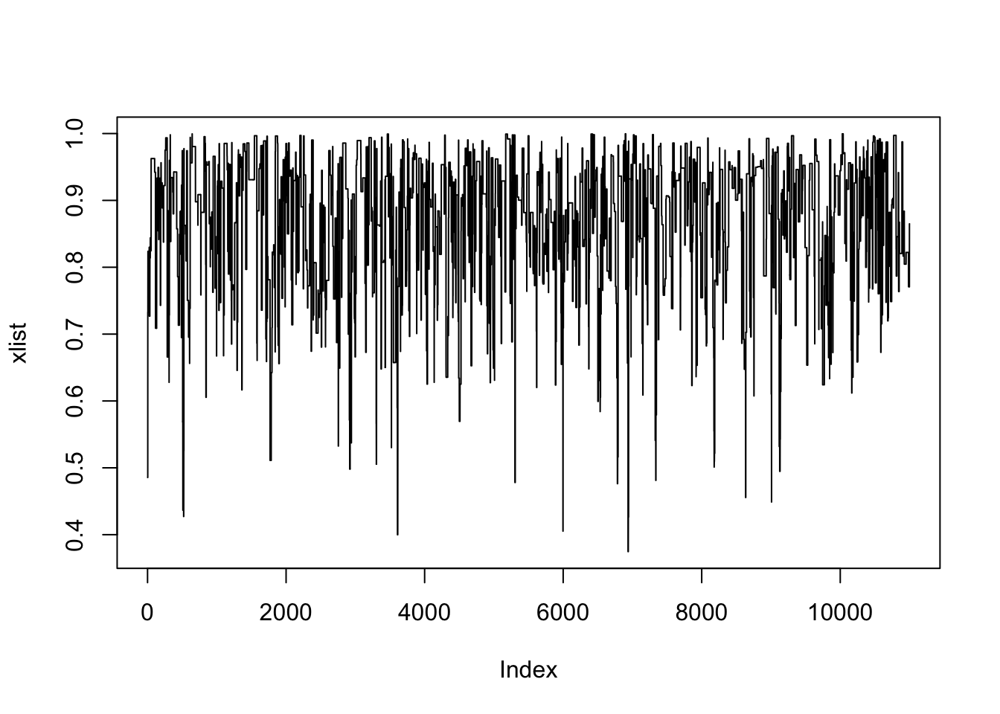

set.seed(340)
rnorm(n=10) [1] -0.1574 -1.1989 -0.8892 1.0091 0.6130 1.0072
[7] 0.4144 -1.8579 -1.3487 0.5189samples <- matrix(runif(10000), ncol=2) |> data.frame() |>
dplyr::mutate(
normals =
purrr::map2(
X1, X2
,(\(x1,x2){
data.frame(
y1 = sqrt( -2 * log(x1) ) * cos(2 * pi * x2)
, y2 = sqrt( -2 * log(x1) ) * sin(2 * pi * x2)
)
})
)
) |>
tidyr::unnest(normals)
samples |>
tidyr::pivot_longer(-c(X1,X2)) |>
ggplot(aes(x=value, color=name, fill=name)) +
geom_histogram(aes(y=..density..), bins = 60, position="identity", alpha=0.3) +
labs(x="Value", y="Density") + theme_minimal()Warning: The dot-dot notation (`..density..`) was deprecated in
ggplot2 3.4.0.
ℹ Please use `after_stat(density)` instead.samples |>
ggplot(aes(x=y1, y=y2)) + geom_point() + coord_fixed() + theme_minimal()

Your computer is only capable of producing pseudorandom numbers. These are made by running a pseudorandom number generator algorithm which is deterministic, e.g.
set.seed(340)
rnorm(n=10) [1] -0.1574 -1.1989 -0.8892 1.0091 0.6130 1.0072
[7] 0.4144 -1.8579 -1.3487 0.5189set.seed(340)
rnorm(n=10) [1] -0.1574 -1.1989 -0.8892 1.0091 0.6130 1.0072
[7] 0.4144 -1.8579 -1.3487 0.5189Once the RNG seed is set, the “random” numbers that R generates aren’t random at all. But someone looking at these random numbers would have a very hard time distinguishing these numbers from truly random numbers. That is what “statistical randomness” means!
The CLT says that for if is finite then the error of the MC estimate
is approximately Normal in distribution for large , i.e.
where
Suppose we need to compute an expectation for some random variable and some function . Monte Carlo methods avoid doing any integration or summation and instead just generate lots of samples of , say and estimate as . The law of large numbers states that this sample mean should be close to .
Said another way, Monte Carlo replaces the work of computing an integral (i.e., an expectation) with the work of generating lots of random variables.
We can use Monte Carlo to estimate probabilities of the form by approximating expectations of the form .
If and we want to compute , we could set up and solve the integral
Alternatively, we could just draw lots of Monte Carlo replicates from a normal with mean and variance , and look at the sample mean , once again appealing to the law of large numbers to ensure that this sample mean is close to its expectation.
Monte Carlo replaces the work of computing an integral (i.e., an expectation) with the work of generating lots of random variables.
This idea can be pushed still further. Suppose that we want to compute an integral
where is some domain of integration and is a function.
Let be the density of some random variable with . In other words, is the density of a random variable supported on . Then we can rewrite the integral as
where and
Now suppose we are given and we want to compute where . So we need to sample from , but what if we could not do that directly?
If there were some other distribution we could sample from, such that , then
This is called importance sampling (IS).
Estimate where (this is the half-Normal distribution)
n <- 5000
X <- rexp(n, rate=2)
W <- exp(-0.5 * X^2 + 2*X) / sqrt(2 * pi)
mu_h <- mean(W*X)
var_h <- var(W*X)/n
se_h <- sqrt(var_h)
tibble::tibble(mean = mu_h, variance = var_h, 'standard error' = se_h) |>
gt::gt() |>
gt::fmt_number(decimals=4)| mean | variance | standard error |
|---|---|---|
| 0.8030 | 0.0003 | 0.0178 |
Suppose that and The is an un-normalized density on whereas the corresponding normalized density is .
Using IS, let , so is an un-normalized density with possibly unknown.
since
Estimate where (this is the half-Normal distribution, un-normalized)
# un-normalized weights
n <- 5000
X <- rexp(n, rate=2)
W <- exp(-0.5 * X^2 + 2*X)
mu_h2 <- sum(W*X)/sum(W)
var_h2 <- var(W/mean(W))
se_h2 <- sqrt(var_h2)
tibble::tibble(mean = mu_h2, variance = var_h2, 'standard error' = se_h2) |>
gt::gt() |>
gt::fmt_number(decimals=4)| mean | variance | standard error |
|---|---|---|
| 0.7895 | 0.4058 | 0.6370 |
Assume we have an un-normalized , i.e. but is unknown.
We want to generate iid samples to estimate
Now assume we have an easily sampled density , and known , such that , i.e. ( or ).
Then use the following procedure:
Since we know that
and so
Since we know that
and so
Similarly, for any , we can calculate the joint probability
We have
We also have
The probability of rejection of a draw is
and so1
Recal that we accept the proposal whenever where such that
We have
In most practical scenarios, we know and only up to some normalizing constants
We can still use rejection sampling since
In practice this means we can ignore the normalizing constants if we can find to bound
Suppose we need to compute an expectation for some random variable and some function . Monte Carlo methods avoid doing any integration or summation and instead just generate lots of samples of , say and estimate as . The law of large numbers states that this sample mean should be close to .
Said another way, Monte Carlo replaces the work of computing an integral (i.e., an expectation) with the work of generating lots of random variables.
A stochastic process, which we will usually write as , is an indexed sequence of random variables that are (usually) dependent on each other.
Each random variable takes a value in a state space which is the set of possible values for the process. As with usual random variables, the state space can be discrete or continuous. A discrete state space denotes a set of distinct possible outcomes, which can be finite or countably infinite. For example, is the state space for a single coin flip, while in the case of counting insurance claims, the state space would be the nonnegative integers .
Further, the process has an index set that puts the random variables that make up the process in order. The index set is usually interpreted as a time variable, telling us when the process will be measured. The index set for time can also be discrete or continuous. Discrete time denotes a process sampled at distinct points, often denoted by , while continuous time denotes a process monitored constantly over time, often denoted by .
Think of a simple board game where we roll a dice and move that many squares forward on the board. Suppose we are currently on the square . Then what can we say about which square we move to on our next turn?
The third point is called the Markov property or memoryless property. We say “memoryless”, because we only need to remember what square we’ve reached, not which squares we used to get here. The stochastic process before this moment has no bearing on the future, given where we are now. A mathematical way to say this is that “the past and the future are conditionally independent given the present.”
Consider the following simple random walk on the integers : We start at , then at each time step, we go up by one with probability and down by one with probability . When , we’re equally as likely to go up as down, and we call this the simple symmetric random walk.
The simple random walk is a simple but very useful model for lots of processes, like stock prices, sizes of populations, or positions of gas particles. (In many modern models, however, these have been replaced by more complicated continuous time and space models.) The simple random walk is sometimes called the “drunkard’s walk”, suggesting it could model a drunk person trying to stagger home.
require(ggplot2, quietly = TRUE)
set.seed(315)
rrw <- function(n, p = 1/2) {
q <- 1 - p
Z <- sample(c(1, -1), n, replace = TRUE, prob = c(p, q))
X <- c(0, cumsum(Z))
c(0, cumsum(Z))
}
n <- 2000
rw_dat <- tibble::tibble(x=0:n) |>
dplyr::mutate(
"p = 2/3" = rrw(n, 2/3)
, "p = 1/3" = rrw(n, 1/3)
, "p = 1/2" = rrw(n, 1/2)
)
p0 <- rw_dat |> dplyr::slice_head(n=20) |>
tidyr::pivot_longer(cols = -x) |>
ggplot(aes(x=x,y=value, color=name)) +
geom_line() +
theme_minimal()
p1 <- rw_dat |> dplyr::slice_head(n=200) |>
tidyr::pivot_longer(cols = -x) |>
ggplot(aes(x=x,y=value, color=name)) +
geom_line() +
theme_minimal()
p3 <- rw_dat |> #dplyr::slice_head(n=200) |>
tidyr::pivot_longer(cols = -x) |>
ggplot(aes(x=x,y=value, color=name)) +
geom_line() +
theme_minimal()
p0+p1+p3
We can write this as a stochastic process with discrete time and discrete state space , where and, for , we have
It’s clear from this definition that (the future) depends on (the present), but, given , does not depend on (the past). Thus the Markov property holds, and the simple random walk is a discrete time Markov process or Markov chain.
So far we’ve seen a a few examples of stochastic processes in discrete time and discrete space with the Markov memoryless property. Now we will develop the theory more generally.
To define a so-called “Markov chain”, we first need to say where we start from, and second what the probabilities of transitions from one state to another are.
In our examples of the simple random walk and gambler’s ruin, we specified the start point exactly, but we could pick the start point at random according to some distribution .
After that, we want to know the transition probabilities for . Here, because of the Markov property, the transition probability only needs to condition on the state we’re in now , and not on the whole history of the process.
In the case of the simple random walk, for example, we had initial distribution and transition probabilities
For the random walk (and also the gambler’s ruin), the transition probabilities don’t depend on ; in other words, the transition probabilities stay the same over time. A Markov process with this property is called time homogeneous. We will always consider time homogeneous processes from now on (unless we say otherwise).
Let’s write for the transition probabilities, which are independent of . We must have , since it is a probability, and we must also have for all states , as this is the sum of the probabilities of all the places you can move to from state i.
When the state space is finite (and even sometimes when it’s not), it’s convenient to write the transition probabilities as a matrix , called the transition matrix, whose th entry is . Then the condition that is the condition that each of the rows of add up to .
Consider a simple two-state Markov chain with state space and transition matrix for some . Note that the rows of add up to , as they must.
We can illustrate by a transition diagram, where the blobs are the states and the arrows give the transition probabilities. (We don’t draw the arrow if .) In this case, our transition diagram looks like this:

We can use this as a simple model of customer churn, for example. If the customer has closed their account (state 0) on one period, then with probability we will be able to entice them to open their account again (state 1) by the next period; while if the customer has an account (state 1), then with probability they will have closed their account (state 0) by the next period.
If the customer has an account on period n, what’s the probability they also have an account on period n+2?
The key to calculating this is to condition on the first step again – that is, on whether the printer is working on Tuesday. We have
In the second equality, we used the Markov property to mean conditional probabilities like did not have to depend on .
Another way to think of this as we summing the probabilities of all length-2 paths from 1 to 1, which are with probability and with probability
In the above example, we calculated a two-step transition probability by conditioning on the first step. That is, by considering all the possible intermediate steps , we have
But this is exactly the formula for multiplying the matrix with itself! In other words, is the th entry of the matrix square . If we write for the matrix of two-step transition probabilities, we have .
More generally, we see that this rule holds over multiple steps, provided we sum over all the possible paths of length from to .
Theorem 1 Let be a Markov chain with state space and transition matrix . For , write for the -step transition probability. Then
In particular, is the th element of the matrix power , and the matrix of -step transition probabilities is given by .
The so-called Chapman–Kolmogorov equations follow immediately from this.
Let be a Markov chain with state space and transition matrix . Then, for non-negative integers , we have or, in matrix notation, .
In other words, a trip of length from to is a trip of length from to some other state , then a trip of length from back to , and this intermediate stop can be any state, so we have to sum the probabilities.
Of course, once we know that is given by the matrix power, it’s clear to see that .
If we start from a state given by a distribution , then after step 1 the probability we’re in state is . So if , we stay in this distribution forever. We call such a distribution a stationary distribution. We again recognise this formula as a matrix-vector multiplication, so this is , where is a row vector.
Let be a Markov chain on a state space with transition matrix . Let be a distribution on , in that for all and . We call a stationary distribution if
or, equivalently, if .
Note that we’re saying the distribution stays the same; the Markov chain itself will keep moving. One way to think is that if we started off a thousand Markov chains, choosing each starting position to be with probability , then (roughly) of them would be in state at any time in the future – but not necessarily the same ones each time.
A Markov Chain is irreducible if you have positive probability of eventually getting from anywhere to anywhere else.
A Markov Chain is aperiodic if there are no forced cycles, i.e. there do not exist disjoint non-empty subsets X1,X2,…,Xd ford≥2,suchthatP(x,Xi+1)=1 forallx∈Xi (1≤i≤d−1),andP(x,X1)=1forallx∈Xd. [Diagram.]

Suppose have complicated, high-dimensional density and we want samples . (Then can do Monte Carlo.)
Define a Markovchain (dependent random process) in such a way that for large enough , .
Then we can estimate by:
where (“burn-in”) is chosen large enough so , and is chosen large enough to get good Monte Carlo estimates.
This version is called random-walk Metropolis
g = function(y) {
if ( (y<0) || (y>1) )
return(0)
else
return( y^3 * sin(y^4) * cos(y^5) )
}
h = function(y) { return(y^2) }
M = 11000 # run length
B = 1000 # amount of burn-in
X = runif(1) # overdispersed starting distribution
sigma = 1 # proposal scaling
xlist = rep(0,M) # for keeping track of chain values
hlist = rep(0,M) # for keeping track of h function values
numaccept = 0;
for (i in 1:M) {
Y = X + sigma * rnorm(1) # proposal value
U = runif(1) # for accept/reject
alpha = g(Y) / g(X) # for accept/reject
if (U < alpha) {
X = Y # accept proposal
numaccept = numaccept + 1;
}
xlist[i] = X;
hlist[i] = h(X);
}
cat("ran Metropolis algorithm for", M, "iterations, with burn-in", B, "\n");ran Metropolis algorithm for 11000 iterations, with burn-in 1000 cat("acceptance rate =", numaccept/M, "\n");acceptance rate = 0.106 u = mean(hlist[(B+1):M])
cat("mean of h is about", u, "\n")mean of h is about 0.7643 se1 = sd(hlist[(B+1):M]) / sqrt(M-B)
cat("iid standard error would be about", se1, "\n")iid standard error would be about 0.00171 varfact <- function(xxx) { 2 * sum(acf(xxx, plot=FALSE)$acf) - 1 }
thevarfact = varfact(hlist[(B+1):M])
se = se1 * sqrt( thevarfact )
cat("varfact = ", thevarfact, "\n")varfact = 20.52 cat("true standard error is about", se, "\n")true standard error is about 0.007744 cat("approximate 95% confidence interval is (", u - 1.96 * se, ",",
u + 1.96 * se, ")\n\n")approximate 95% confidence interval is ( 0.7492 , 0.7795 )plot(xlist, type='l')
# acf(xlist)The geometric distribution is a discrete distribution that can be interpreted as the number of failures before the first success (, with mean ).↩︎